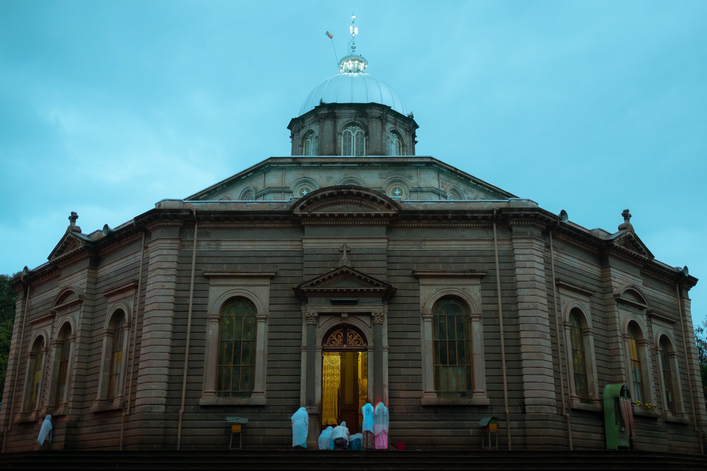
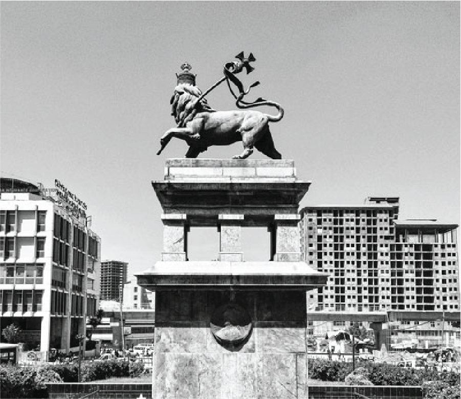
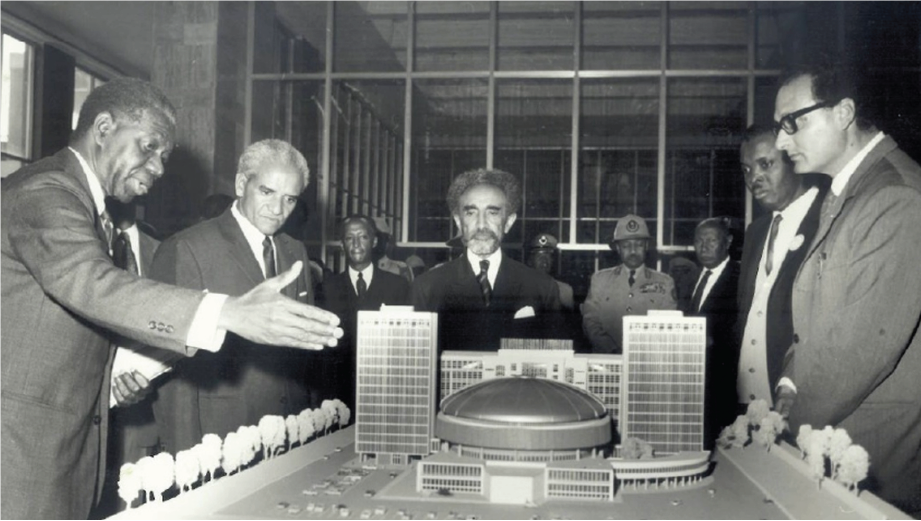
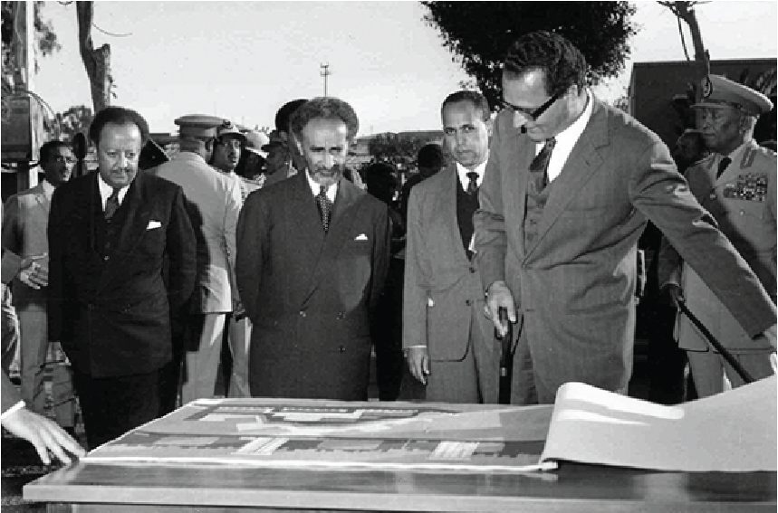
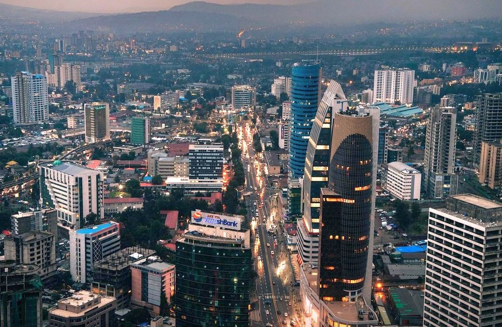

Living in Addis Ababa at the moment is like living amid an overgrown building site. Instead of airy parks, lush gardens or pleasant pedestrian alleyways, the city feels as though it is filled with cranes, scaffolding, diggers, building fences and piles upon piles of rubble.
The mechanical earth shuffling and beating of metal have become the city's dominant sounds, and not a single area or street is spared by the construction frenzy. Addis has turned itself upside down to create the new New Flower.
Many see this building craze as unprecedented, with new tower blocks getting off the ground, neighborhoods undergoing development, and a modern light railway now running above city streets. But the current urban transformation is not as novel as is often perceived.
In Addis Ababa's 130 years of existence, the capital city has certainly known other periods of intense construction and urban change, even if not on exactly the same scale. In fact, beneath the façade of today's development lie many prominent 1960s-era buildings, which together tell a tale of the capital's modern ascendance.

Laying the foundation:
It took Haile Selassie some 15 years after triumphantly returning to his country in 1941 before he could start rethinking about building the capital. The world around him, slowly recovering from the scars of the ravaging war, entered back into construction mode.
Everything had to be rebuilt — not only the destroyed cities themselves, but also a new world order in which Africa would be a sovereign and independent continent. The spirit of decolonization spread fast from East to West, leading to the creation of the Organisation of African Unity — the very first Pan-African institution.
Emperor Selassie, a great supporter of Pan-Africanism, proposed to host the new African organization in Addis Ababa.
For many, the fact that Ethiopia had never been colonized made it a symbolic choice, but for the emperor, that wasn't enough; he wanted Addis to become a modern African city recognized on the global map, with architectural designs that would make his country proud.

Clashing ideas on architecture:
In particular, some architects of the time began to question the so-called International Style or modern movement that had dominated since the 1920s. The movement — represented mainly by the works of Le Corbusier, Ludwig Mies van der Rohe, Walter Gropius and Frank Lloyd Wright — prescribed simple, rectilinear forms; a focus on functionality (with open interior space and a lack of ornamentation); and the use of modern materials, such as glass, steel and reinforced concrete. In opposition to the modernists, the younger generation of architects again looked at local context and specificities for their structures, as well as for style and decoration.
In Addis, the architectural shift started in 1959, with the construction of Africa Hall — one of Addis' landmark buildings and the first seat of the Organisation of African Unity (later renamed the African Union). The building was designed by Mezzedimi, the first international architect to work in Addis. Having studied futurist architecture in Europe, Mezzedimi was already working in the Horn of Africa, where his designs for an indoor swimming pool in Asmara, Eritrea, drew notice.
With Africa Hall, he created an over-imposing building to reflect the perceived importance of the nascent OUA, while still applying some of the geometric principles of the modern movement. Today, the building is the seat of the United Nations Economic Commission for Africa. It is also renowned for its colorful stained-glass triptych windows, created by the great Ethiopian artist Afewerk Tekle to represent the sorrows of Africa's past, the struggles of the present and the hopes for its future.
Mezzedimi likewise designed the Addis Ababa City Hall, which dominates the whole city center from its height on top of Churchill Road. With two massive wings and a central clock tower, it may not be the most elegant of buildings, but it is certainly memorable in terms of scale and location.
Together with Africa Hall, it's often been labeled by critics as a “work of the regime.” To defend his position, Mezzedimi wrote that his intention had been to make a strong impression on public opinion, showing that it is indeed possible to erect striking buildings in Ethiopia.

Emergence of modern Addis Ababa:
The architectural fever across Addis continued well into the mid-1960s, with more landmark structures being raised across the city. The Hilton Hotel and the Ministry of Foreign Affairs, located opposite one another, stand out as prime examples of innovative designs that attempted to chart a new architectural path.
The Hilton — designed by American architect Charles Warner — has a classic hotel layout, with an open ground floor surrounded by restaurant, reception and bar areas, and upstairs guestrooms aligned along a central corridor. It does not, however, appear as an abstract and geometric box, as was held dear by modernists, but instead is full of references to the local context.
Notable Buildings of Modern Addis
Many other noteworthy buildings across the capital trace their origins to the same period — from the Finfinne building on the corner of Meskel Square, to the National Bank on Churchill Avenue, to the Lycee Guebre Mariam and more. “Even if they are not all masterpieces,” says Professor Knebel, “the city has a rare collection of buildings that embodies the complexity and contradictions of the time. Not in many places can this be found.”
With the current urban transformation underway, many of these precious buildings and others like them will be eclipsed by much taller towers — making us forget that they once embodied modernity in Addis. Their aesthetic quality and originality will remain, however, even as the new New Flower continues to bloom and grow well into the 21st century.
